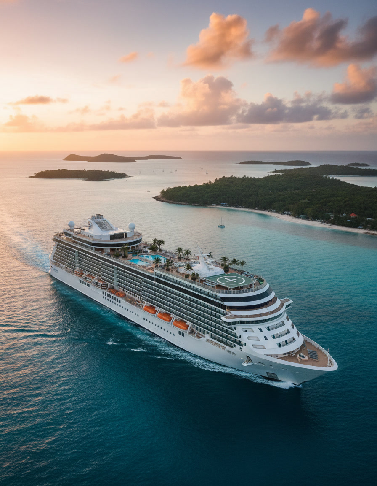

Caribbean Cruise
The Caribbean is at its quietest between March and July. The sea is calmest then, and the islands are still cool enough to walk through without rush.
Mornings on the upper deck arrive before everyone else is awake. Coffee, the first warm air, a thin line of land that wasn’t there yesterday — St. Barth’s, maybe, or Mustique, or one of the small Grenadines whose name you’ll learn at breakfast.
A cruise lets you visit five islands without unpacking once. Anguilla’s white sand. The Pitons rising out of St. Lucia. A few hours in Grand Cayman, then onwards. By the third morning, the small ritual of sun, water, and a slow horizon becomes the whole point.
If you have been carrying too much for too long, this is one of the gentlest ways to put it down.
Find Caribbean cruise routes →